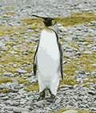
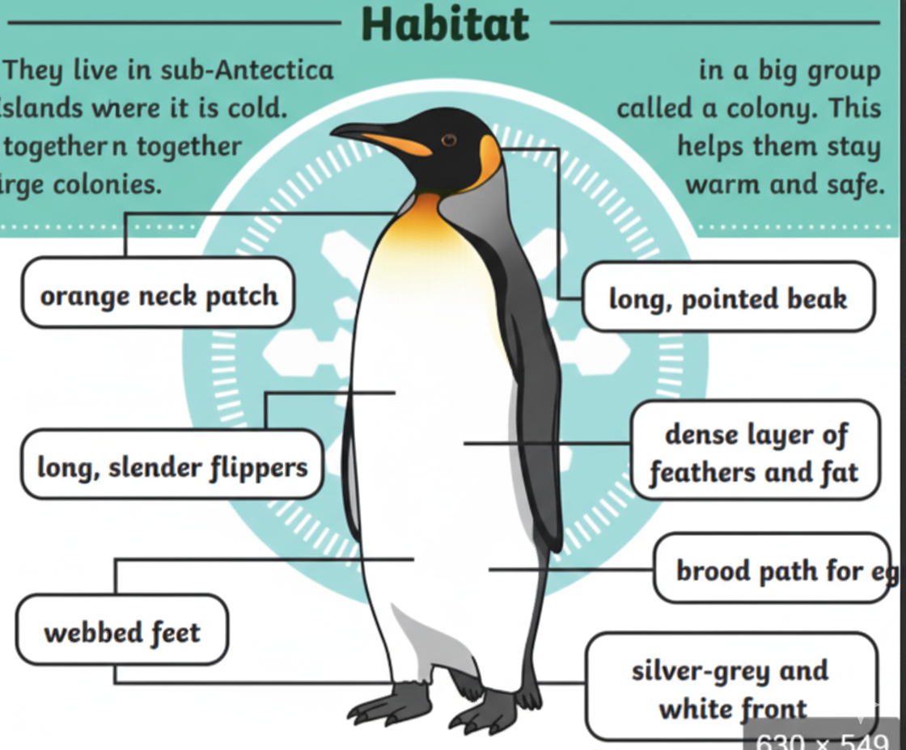
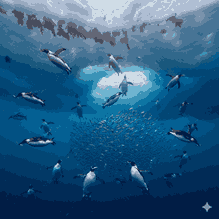

The Second Largest Penguin Species

King penguins are the second largest penguin species after emperor penguins. They are known for their bright orange and yellow markings on their head and chest.

King penguins live on sub-Antarctic islands such as South Georgia and the Falkland Islands. They prefer ice-free beaches and open ocean areas.

King penguins mainly feed on fish, squid, and small crustaceans. They are excellent swimmers and can stay underwater for several minutes.